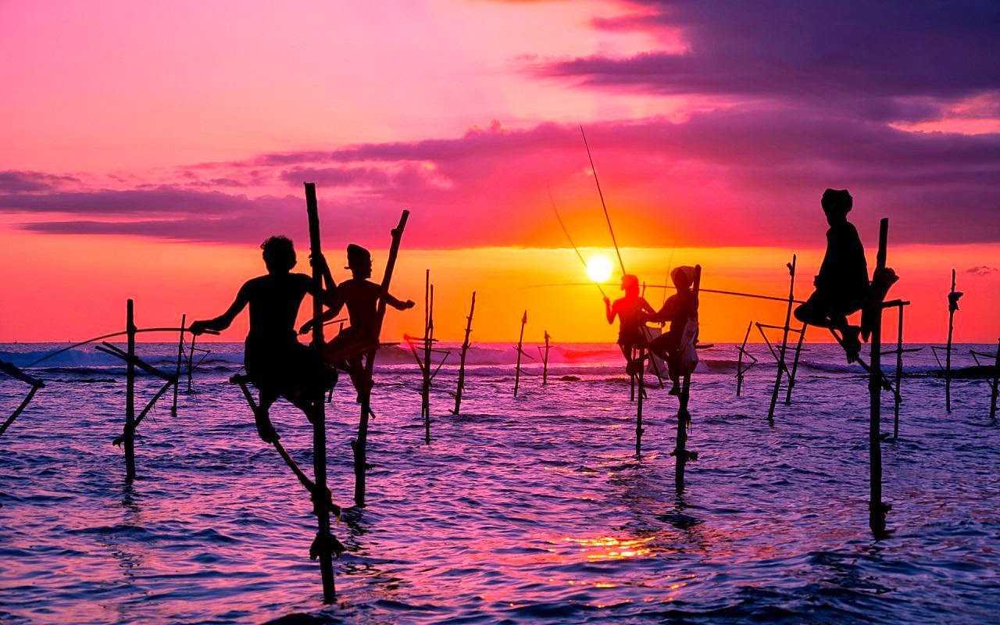
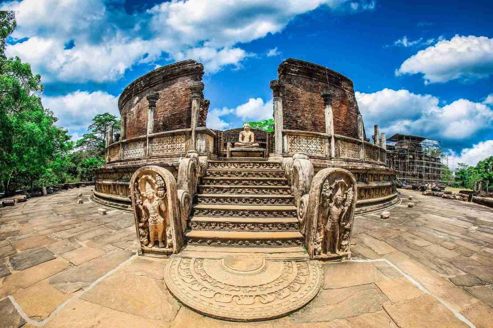

Sri Lanka, formerly Ceylon, island country lying in the Indian Ocean and separated from peninsular India by the Palk Strait.From the Sri Lanka blue magpie to the Sri Lanka leopard, the great Asian elephant to the ginormous blue whale, Sri Lanka has stupendous
wildlife.

Cooking & food holidays in Sri Lanka Sri Lanka is a culinary paradise, where fresh local ingredients, sizzling spices and recipes bequeathed by a history of colonisation create a diverse and delicious culinary scene.
food, night life and many more.

Sri Lanka
is a very beautiful, peaceful and safe country. It’s a country of incredible sunsets and sunrises, friendly locals and cute wild animals in your garden. Sri Lanka is developing rapidly to become the best tourist destination.

For now, it’s
still not spoilt by mass tourism.If you have a plan for holiday trip, then Sri Lanka will be a good option for your holiday destination. You can enjoy the enormous beauty of endless beaches, elephants, hotels and restaurants with favorable
food, night life and many more..